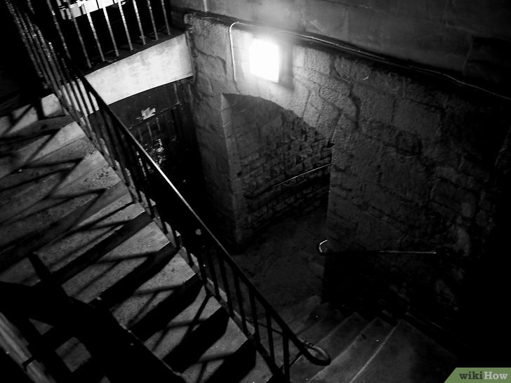
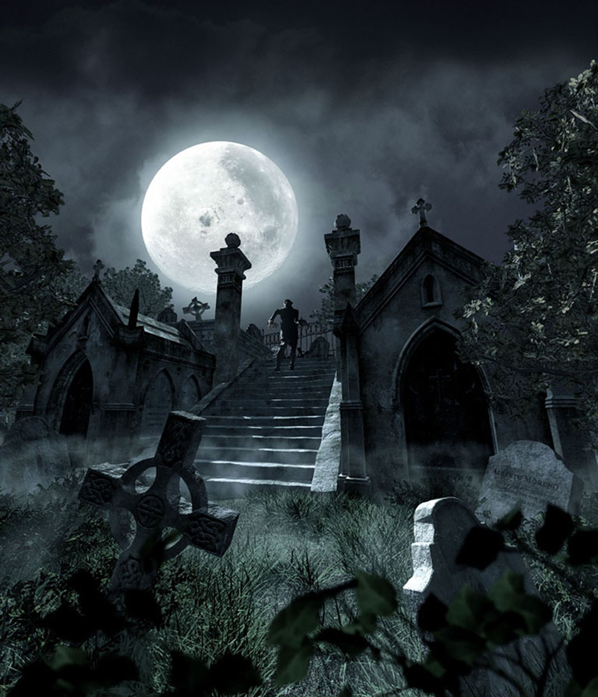
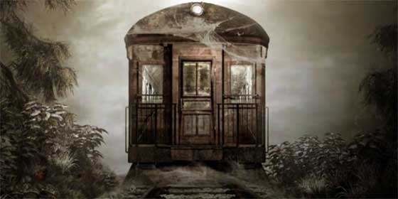

Fotos Fantasmales
Las imagenes es una de las formas que vemos que algo pasa, hay casos que vemos figuras fantasmales.

hola
hola
hola
hola
Las imagenes son una de las partes donde podemos dectectar cosas o formas paranormales que a la vista no nos damos cuenta.Hasta en los luguares menos inesperados pueden aparecer sin que tu te des cuenta, asi que cada ves que tomemos unaa foto devemos de fijarnos mas de lo que podemos sacar en cualquier momento.